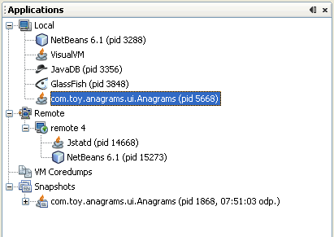

Applications 창 사용
VisualVM을 실행하면 Applications창이 왼쪽에 보인다. Applications창은 로컬이나 원격 JMV에서 돌아가는 애플리케이션을 빠르게 보기 위해 트리구조를 사용한다. Applications창은 애플리케이션 목록뿐 아니라 코어덤프와 애플리케이션 스냅샷 또한 보여준다.
Applications 창의 노드들
Application창은 실행중인 애플리케이션과 저장한 파일을 보여주기 위해 노트와 하위노드 구조로 되어있다. Application창의 대부분의 노드에서 마우스 오른쪽 버튼을 클릭해서 뜨는 팝업메뉴를 통해 추가적인 정보나 부가적인 기능을 실행할 수 있다. 팝업메뉴에서 실행가능한 기능은 노드의 성격에 따라 조금씩 다르다.
Applications창은 다음의 기본 노드를 가진다.
Local 노드
Local 노드는 VisualVM과 같은 시스템에서 실행중인 자바 애플리케이션의 이름과 프로세스 아이디(PID)를 표기한다. VisualVM을 실행해서 Local노드를 확장하면, VisualVM은 현재 실행중인 자바 애플리케이션을 자동으로 표사한다. VisualVM 또한 로컬 애플리케이션처럼 나열된다. 새로운 로컬 애플리케이션이 실행되면, 그 애플리케이션 노드가 Local 노드아래 나타난다. 애플리케이션이 종료되면 애플리케이션 노드가 사라진다.
쓰레드 덤프, 힙덤프 그리고 애플리케이션의 프로파일링 스냅샷을 생성하기 위해 VisualVM을 사용한다면, 각각의 데이터는 애플리케이션 노드 아래 하위노드로 표시된다. 각각의 데이터를 로컬시스템에 저장하기 위해서는 덤프나 스냅샷 하위노드를 선택하고 마우스 우측 버튼을 클릭한다. 애플리케이션에 대한 수집된 모든 정보를 애플리케이션 스냅샷으로 저장할 수 있다.
로컬 애플리케이션에 대한 데이터를 보는 방법을 좀더 알기 위해서는 다음 페이지를 참고하자.
Remote 노드
VisualVM을 사용해서 원격호스트에 접속하면, 원격호스트는 Remote노드 아래 노드형태로 나열된다. 원격호스트에 접속되면, 해당 호스트에서 실행되는 자바 애플리케이션을 보기 위해 원격호스트 노드의 + 표시를 열어볼 수 있다. 자바 애플리케이션이 원격호스트에서 실행되면, 애플리케이션 노드는 원격호스트 노드 아래 표시된다.
VisualVM이 호스트에 접속하고자 한다면 원격호스트의 위치를 추가할 필요가 있다. 원격호스트가 추가되면, VisualVM은 원격호스트의 위치를 저장하고 VisualVM을 시작할때마다 해당 호스트에 연결할것이다. VisualVM이 시작시 호스트에 접속하길 원하지 않는다면, VisualVM을 끄기전에 원격호스트 노드를 선택하고 마우스 우측 버튼을 클릭 후 Remove before quitting VisualVM를 선택한다.
알림: 원격호스트에서 실행중인 애플리케이션에 대한 정보를 받아서 보여주기 위해, jstatd 유틸리티를 원격호스트에서 실행할 필요가 있다. 이 유틸리티를 시작하기 위해서, 명령창에서 jstatd 를 치면 된다. jstatd 유틸리티는 JDK 6의 일부로 포함되어 있다.
원격 애플리케이션에 대한 데이터를 보는 방법에 대해 더 알고자 한다면, 다음 페이지를 참고하자.
VM Coredumps
VM Coredumps노드는 VisualVM에서 파일을 여는 코어덤프 바이너리 파일들을 보여준다. 코어덤프는 코어덤프를 생성한 시점의 장비가 가진 런타임 상태에 대한 정보를 포함하는 바이너리 파일이다. 코어덤프를 가지고 있다면, 시스템 프로퍼티의 개요와 힙덤프및 쓰레드 덤프를 얻을수 있다.
알림: Core Dump 노드는 VisualVM을 솔라리스나 리눅스에서 실행할때만 볼수 있다.
좀더 많은 정보는 다음의 문서를 참고하자.
Snapshots
Snapshots노드는 VisualVM 사용자디렉터리에 저장된 애플리케이션 스냅샷을 나열한다. 스냅샷을 명시적으로 삭제하기 전까지는 계속 노출된다. 애플리케이션 스냅샷은 스냅샷을 생성한 시점의 애플리케이션의 힙덤프, 쓰레드덤프와 프로파일러 스냅샷을 수집한다. 스냅샷에 수집된 데이터를 보기 위해 애플리케이션 스냅샷노드에서 + 를 확장해서 세부정보를 볼수 있다.
애플리케이션 스냅샷 노드를 선택하고 마우스 우측 버튼을 클릭 후 나오는 팝업메뉴에서 선택한 노드를 열거나 저장및 삭제와 이름을 변경하는 등의 작업도 가능하다.
스냅샷을 생성하고 저장하는 좀더 다양한 정보를 보기 위해서는 다음의 문서를 참고하자.